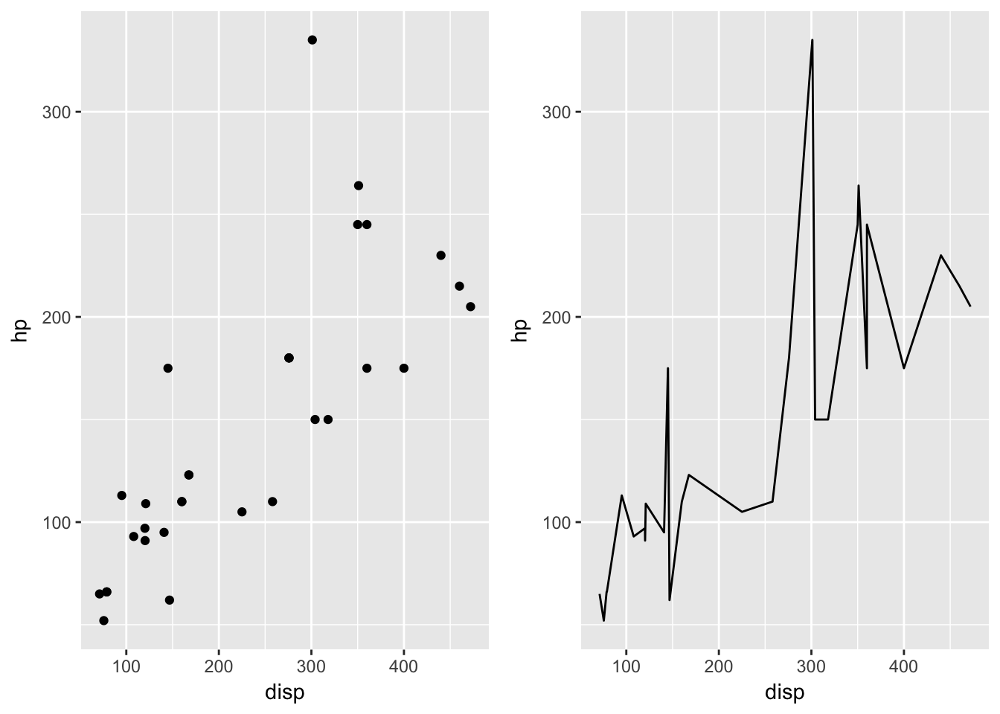
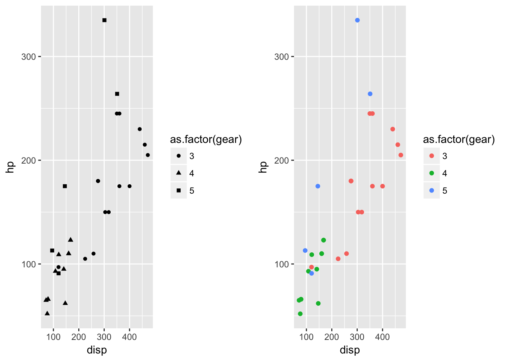
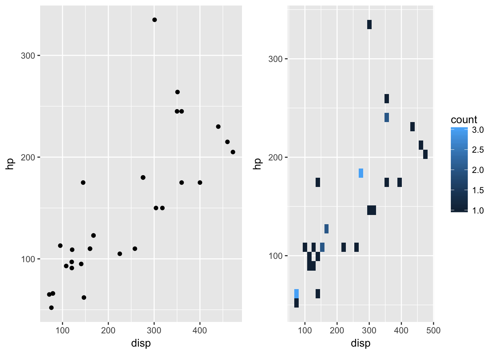
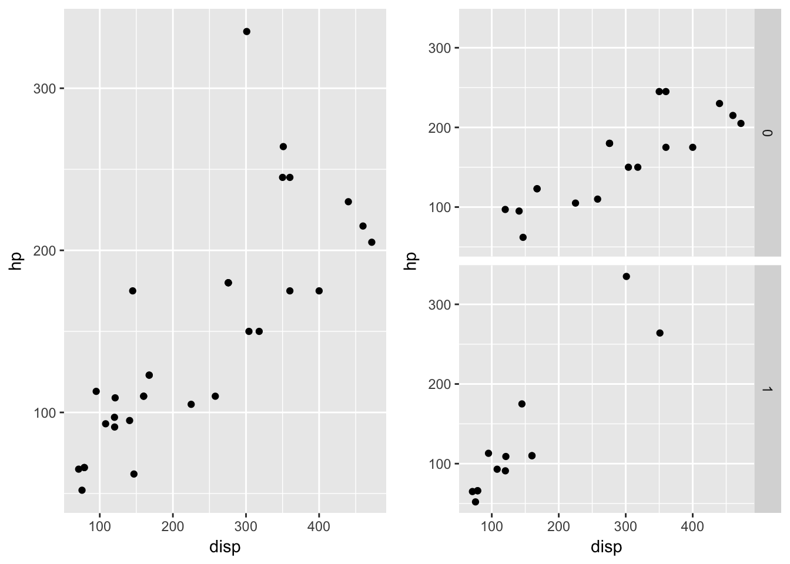
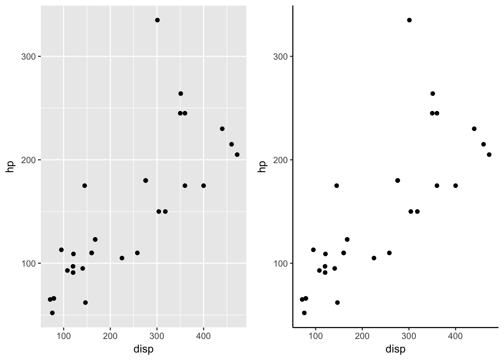
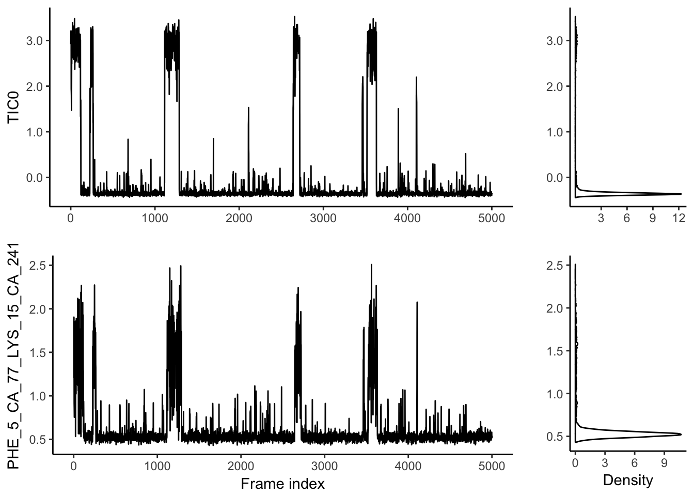

ggplot2 plotting template
Get practice file
Run the following code to get the practice file into your working directory.
download.file('https://raw.githubusercontent.com/MingChen0919/gst-colloquium-workshop-2018/update-ggplot-template-tutorial/misc/ggplot2-template-practice.Rmd', destfile = 'ggplot2-template-practice.Rmd')Example data
The data was extracted from the 1974 Motor Trend US magazine, and comprises fuel consumption and 10 aspects of automobile design and performance for 32 automobiles (1973–74 models).
## mpg cyl disp hp drat wt qsec vs am gear carb
## Mazda RX4 21.0 6 160.0 110 3.90 2.620 16.46 0 1 4 4
## Mazda RX4 Wag 21.0 6 160.0 110 3.90 2.875 17.02 0 1 4 4
## Datsun 710 22.8 4 108.0 93 3.85 2.320 18.61 1 1 4 1
## Hornet 4 Drive 21.4 6 258.0 110 3.08 3.215 19.44 1 0 3 1
## Hornet Sportabout 18.7 8 360.0 175 3.15 3.440 17.02 0 0 3 2
## Valiant 18.1 6 225.0 105 2.76 3.460 20.22 1 0 3 1
## Duster 360 14.3 8 360.0 245 3.21 3.570 15.84 0 0 3 4
## Merc 240D 24.4 4 146.7 62 3.69 3.190 20.00 1 0 4 2
## Merc 230 22.8 4 140.8 95 3.92 3.150 22.90 1 0 4 2
## Merc 280 19.2 6 167.6 123 3.92 3.440 18.30 1 0 4 4
## Merc 280C 17.8 6 167.6 123 3.92 3.440 18.90 1 0 4 4
## Merc 450SE 16.4 8 275.8 180 3.07 4.070 17.40 0 0 3 3
## Merc 450SL 17.3 8 275.8 180 3.07 3.730 17.60 0 0 3 3
## Merc 450SLC 15.2 8 275.8 180 3.07 3.780 18.00 0 0 3 3
## Cadillac Fleetwood 10.4 8 472.0 205 2.93 5.250 17.98 0 0 3 4
## Lincoln Continental 10.4 8 460.0 215 3.00 5.424 17.82 0 0 3 4
## Chrysler Imperial 14.7 8 440.0 230 3.23 5.345 17.42 0 0 3 4
## Fiat 128 32.4 4 78.7 66 4.08 2.200 19.47 1 1 4 1
## Honda Civic 30.4 4 75.7 52 4.93 1.615 18.52 1 1 4 2
## Toyota Corolla 33.9 4 71.1 65 4.22 1.835 19.90 1 1 4 1
## Toyota Corona 21.5 4 120.1 97 3.70 2.465 20.01 1 0 3 1
## Dodge Challenger 15.5 8 318.0 150 2.76 3.520 16.87 0 0 3 2
## AMC Javelin 15.2 8 304.0 150 3.15 3.435 17.30 0 0 3 2
## Camaro Z28 13.3 8 350.0 245 3.73 3.840 15.41 0 0 3 4
## Pontiac Firebird 19.2 8 400.0 175 3.08 3.845 17.05 0 0 3 2
## Fiat X1-9 27.3 4 79.0 66 4.08 1.935 18.90 1 1 4 1
## Porsche 914-2 26.0 4 120.3 91 4.43 2.140 16.70 0 1 5 2
## Lotus Europa 30.4 4 95.1 113 3.77 1.513 16.90 1 1 5 2
## Ford Pantera L 15.8 8 351.0 264 4.22 3.170 14.50 0 1 5 4
## Ferrari Dino 19.7 6 145.0 175 3.62 2.770 15.50 0 1 5 6
## Maserati Bora 15.0 8 301.0 335 3.54 3.570 14.60 0 1 5 8
## Volvo 142E 21.4 4 121.0 109 4.11 2.780 18.60 1 1 4 2help(mtcars)Basic data frame manipulation
head(mtcars)## mpg cyl disp hp drat wt qsec vs am gear carb
## Mazda RX4 21.0 6 160 110 3.90 2.620 16.46 0 1 4 4
## Mazda RX4 Wag 21.0 6 160 110 3.90 2.875 17.02 0 1 4 4
## Datsun 710 22.8 4 108 93 3.85 2.320 18.61 1 1 4 1
## Hornet 4 Drive 21.4 6 258 110 3.08 3.215 19.44 1 0 3 1
## Hornet Sportabout 18.7 8 360 175 3.15 3.440 17.02 0 0 3 2
## Valiant 18.1 6 225 105 2.76 3.460 20.22 1 0 3 1mtcars[1:5, ]## mpg cyl disp hp drat wt qsec vs am gear carb
## Mazda RX4 21.0 6 160 110 3.90 2.620 16.46 0 1 4 4
## Mazda RX4 Wag 21.0 6 160 110 3.90 2.875 17.02 0 1 4 4
## Datsun 710 22.8 4 108 93 3.85 2.320 18.61 1 1 4 1
## Hornet 4 Drive 21.4 6 258 110 3.08 3.215 19.44 1 0 3 1
## Hornet Sportabout 18.7 8 360 175 3.15 3.440 17.02 0 0 3 2mtcars[, 2:4]## cyl disp hp
## Mazda RX4 6 160.0 110
## Mazda RX4 Wag 6 160.0 110
## Datsun 710 4 108.0 93
## Hornet 4 Drive 6 258.0 110
## Hornet Sportabout 8 360.0 175
## Valiant 6 225.0 105
## Duster 360 8 360.0 245
## Merc 240D 4 146.7 62
## Merc 230 4 140.8 95
## Merc 280 6 167.6 123
## Merc 280C 6 167.6 123
## Merc 450SE 8 275.8 180
## Merc 450SL 8 275.8 180
## Merc 450SLC 8 275.8 180
## Cadillac Fleetwood 8 472.0 205
## Lincoln Continental 8 460.0 215
## Chrysler Imperial 8 440.0 230
## Fiat 128 4 78.7 66
## Honda Civic 4 75.7 52
## Toyota Corolla 4 71.1 65
## Toyota Corona 4 120.1 97
## Dodge Challenger 8 318.0 150
## AMC Javelin 8 304.0 150
## Camaro Z28 8 350.0 245
## Pontiac Firebird 8 400.0 175
## Fiat X1-9 4 79.0 66
## Porsche 914-2 4 120.3 91
## Lotus Europa 4 95.1 113
## Ford Pantera L 8 351.0 264
## Ferrari Dino 6 145.0 175
## Maserati Bora 8 301.0 335
## Volvo 142E 4 121.0 109mtcars$mpg## [1] 21.0 21.0 22.8 21.4 18.7 18.1 14.3 24.4 22.8 19.2 17.8 16.4 17.3 15.2 10.4 10.4 14.7 32.4 30.4 33.9 21.5 15.5 15.2 13.3 19.2 27.3 26.0 30.4 15.8 19.7 15.0 21.4Plotting template

- GEOM_FUNCTION: use a geometric object to represent your data.
- MAPPINGS: associate data values with visual values. e.g., categorial data -> different colors.
- STAT: use raw data values or calculate new values from raw values.
- POSITION: adjust overlapped geometric objects.
- COORDINATE_FUNCTION: type of coordinate systems.
- FACET_FUNCTION: divide plots into subplots
- SCALE_FUNCTION: how data values are mapped to visual values.
- THEME_FUNCTION: the apperance of graph components that is not directly related to the mappings.
GEOM_FUNCTION
Specify a geometric object to represent your data

Mappings
From data values to visual values

Stat
transform your data, then map the transformed data values to visual values.

COORDINATE SYSTEM

Facet
Split data into multiple plots.
Scale
Theme
The general appearance

Exercise
Complete the code in the Exercise section in the ggplot2-template-practice.Rmd file to generate the exact same plot as below.
- Two variables that you will use:
- TIC0 from data
energy_tics - PHE_5_CA_77_LYS_15_CA_241 from data
trajectory
- TIC0 from data
